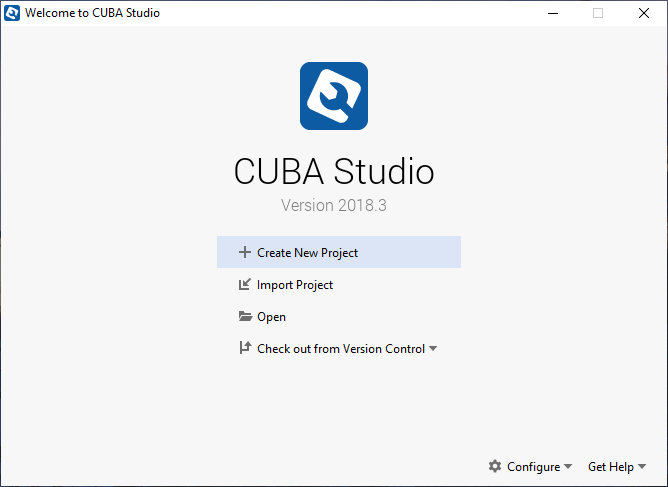
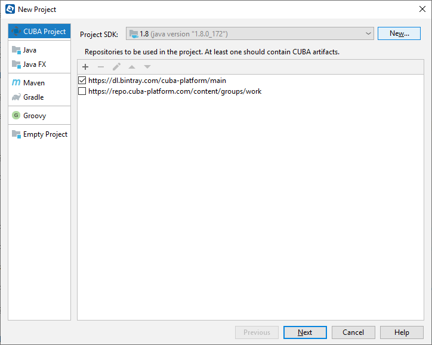
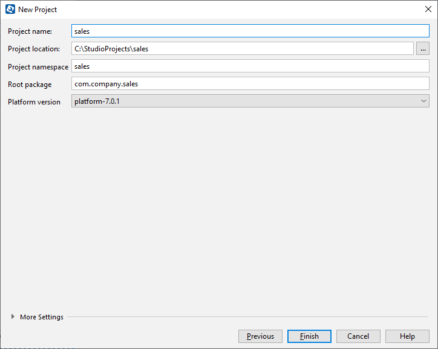
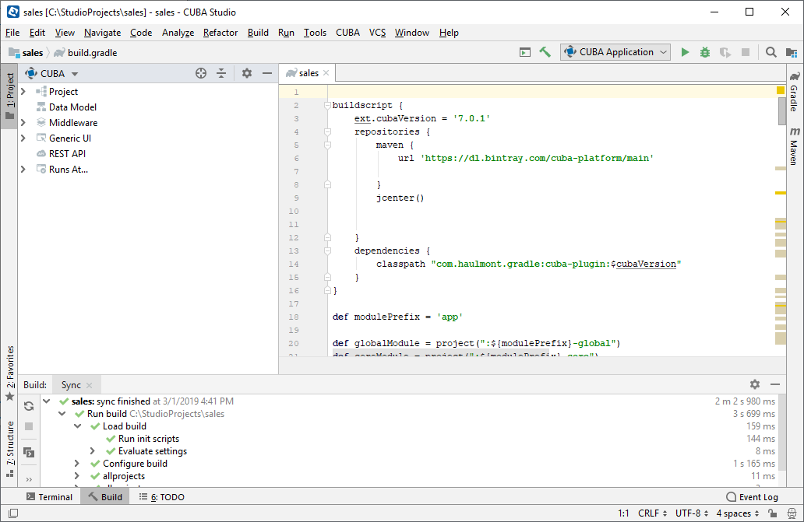

2.2. 创建项目
-
�动 CUBA Studio 。
-
点击 Create New Project 创建新项目。
 -
确�安装了 Java SE Development Kit (JDK) 8，并且选择这个版本为项目默认的 JDK。
仓库（Repository）的列表已�包�了仓库 URL 以�认�需�的�数。
 -
在 New project 窗å�£çš„ Project name å—段指定新项目å��称 - 比如
sales。å��称å�ªèƒ½åŒ…å�«æ‹‰ä¸�å—æ¯�，数å—以å�Šä¸‹åˆ’线。这里需è¦�仔细考虑项目å��ç§°ï¼Œå› ä¸ºä¹‹å��想è¦�修改的è¯�，会需è¦�比较麻烦的手动æ“�作。-
下é�¢è¿™äº›å—段会自动填充：
-
Project location – 项目目录的路径。您å�¯ä»¥é€šè¿‡ç‚¹å‡»å�³è¾¹çš„ …​ 按钮æ�¥è¿›è¡Œæ‰‹åŠ¨é€‰æ‹©ã€‚点击之å��会出ç�° Select folder 的窗å�£ï¼Œè¿™é‡Œä¼šç»™å‡ºä½ 硬盘上的目录列表。您å�¯ä»¥é€‰æ‹©ä¸€ä¸ªæˆ–者创建一个新目录。
-
Project namespace – ä¼šè¢«åŠ åœ¨å®�体å��å—和数æ�®åº“表å��之å‰�作为å‰�缀的一个命å��空间的å��å—。命å��空间å�ªèƒ½åŒ…å�«æ‹‰ä¸�å—æ¯�，而且应当越çŸè¶Šå¥½ã€‚比如，项目的å��å—是
sales_2，命�空间�以用sales或者sal。 -
Root package − Java ç±»çš„æ ¹åŒ…å��。这个å�¯ä»¥ä¹‹å��å†�调整，但是那些在项目创建时就生æˆ�的类将æ�¥æ˜¯ä¸�会自动修改的。
-
Platform version – 项目ä¸éœ€è¦�采用的 CUBA 框æ�¶çš„版本。在项目编译的时候相应的平å�°çš„ä¾�赖包会ä»�仓库自动下载。
-
 -
-
点击 Finish。会在指定的
sales目录创建新的空项目，Studio 的主工作界é�¢ä¹Ÿä¼šæ‰“开。如æ�œæ‚¨æ˜¯é¦–次使用 Studio，Studio å�¯åŠ¨æ—¶ä¼šä¸‹è½½ä»¥å�Šè¿�æ�¥ Gradle å��å�°ç¨‹åº�。还有，在首次使用 CUBA 框æ�¶æ�„建的时候，Studio 会自动下载平å�°çš„æº�ç �和相应的ä¾�èµ–åº“ã€‚å› æ¤ï¼Œæ‰“开项目以å�Šç»„装项目å�¯èƒ½ä¼šè´¹ä¸€äº›æ—¶é—´ã€‚在开始项目工作之å‰�，需è¦�ç‰å¾… Studio çš„å�Œæ¥å’Œåˆ›å»ºç´¢å¼•å·¥ä½œå®Œæˆ�。
 -
在本地 HyperSQL 上创建数æ�®åº“：选择è�œå�•é¡¹ CUBA > Create database。数æ�®åº“çš„å��å—默认就是项目的命å��空间。
-
选择 CUBA > Start application server。或者也å�¯ä»¥é€šè¿‡å·¥å…·æ �çš„ Run Configuration 下拉列表æ�¥å�¯åŠ¨åº”用程åº�。在 CUBA é¡¹ç›®æ ‘çš„ Runs at…​ 部分的项目链æ�¥å�¯ä»¥ç”¨æ�¥ç›´æ�¥ä»� Studio 打开æµ�览器展示项目。
默认的用户å��密ç �是
admin/admin。应用è¿�行起æ�¥ä¼šè‡ªå¸¦ä¸¤ä¸ªä¸»è�œå�•é¡¹ï¼ˆAdministration å’Œ Help），以å�Š CUBA 框æ�¶æ��供的安全å�系统功能ã€�管ç�†å�系统功能。